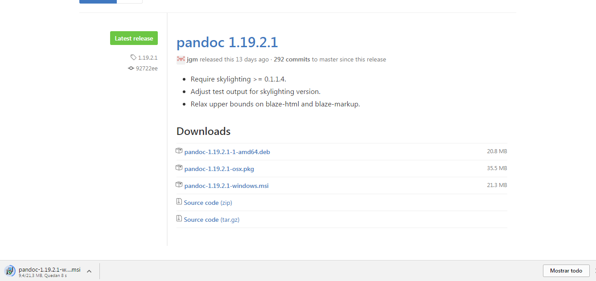
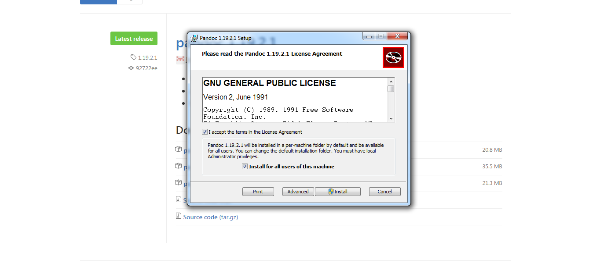
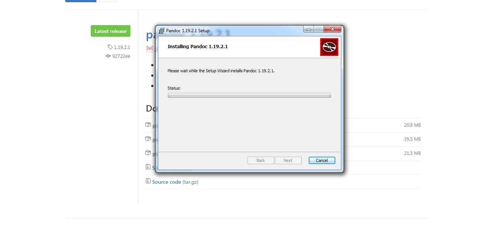

Pandoc
Conversión de archivos escritos en lenguaje de marcado
Introducción
Pandoc es una plataforma de conversión de archivos escritos en lenguaje de marcado, también llamado lenguaje de etiquetado. Puede convertir entre sí un gran número de formatos, entre los que se encuentra Markdown, HTML, EPUB y LaTeX, este último útil para la conversión de documentación a PDF.
Para demostrar su potencia de conversión podemos destacar que soporta la ordenación de listas, notas de pie de pagina, indización superior e inferior y bloques de código con resaltado de código específico para el lenguaje que se determine este, entre otras capacidades.
Instalación
Instalación en Windows y Mac OS X
La instalación en estos sistemas operativos se puede realizar descargando el paquete de instalación ofrecito por la página oficial:

Una vez descargado, con ejecutarlo comenzará la instalación:

Podemos tanto instalar directamente como cambiar la ruta de origen del programa pulsando en advanced, y tras un breve tiempo, Pandoc estará instalado en nuestro ordenador.

Tanto en Windows como en Mac OS X puede sustraer los ejecutables pandoc y pandoc-citeproc en caso de que lo prefiera a activar el instalador.
Instrucciones para Windows:
En este ejemplo localizamos el programa en C:\Utils\Console\
mkdir "%TEMP%\pandoc\"
start /wait msiexec.exe /a pandoc-1.19.1-windows.msi /qn targetdir="%TEMP%\pandoc\"
copy /y "%TEMP%\pandoc\pandoc.exe" C:\Utils\Console\
copy /y "%TEMP%\pandoc\pandoc-citeproc.exe" C:\Utils\Console\
rmdir /s /q "%TEMP%\pandoc\"
Instrucciones para Mac OS X:
mkdir pandoc-extract
cd pandoc-extract
xar -x ../pandoc-1.19.1-osx.pkg
cat pandoc.pkg/Payload | gunzip -dc | cpio -i
Instalación en Linux y otras distros
Pandoc está en los repositorios de Debian, Ubuntu, Slackware, ArchLinux, Fedora, NiXOS, openSUSE y Gentoo. Sin embargo, hay que tener en cuenta en esta opción que los archivos de los repositorios pueden estar desfasados. Por esta razón, disponemos del código fuente actualizado para descargar y compilar.
Además, en el caso de NetBSD y FreeBSD, Pandoc está actualizado en repositorios.
Instalación a partir de código fuente
Para instalar Pandoc a partir del código fuente el método más fácil es a través de la instalación de la plataforma Haskell, instalable mediante paquetes de instalación y terminal.
Una vez instalada la plataforma, debemos actualizar Cabal, una arquitectura para la construcción de aplicaciones y librerías.
cabal update
Tras esto, podemos instalar Pandoc:
cabal install pandoc --enable-tests
Esta línea de comandos ejecutará la instalación de la última versión de Pandoc lanzada al público
Si desea instalar un versión de Pandoc:
cabal install Esta línea de comandos debe ser lanzada en el directorio origen.
Tras esto pasos resta comprobar si la instalación ha sido un éxito ejecutando alguna orden de Pandoc:
pandoc --help
Si quiere realizar citaciones y una bibliografía automáticamente mediante Pandoc, debe instalar pandoc-citeproc
cabal install pandoc-citeproc
El método utilizado por defecto para ordenar la bibliografía es el i;unicode-casemap. Si quiere utilizar el algoritmo de colocación, debe especificar mediante el flag de unicode_collation:
cabal install pandoc-citeproc -funicode_collation
Aspectos básicos de Pandoc
La conversión de archivos se realiza por terminal con la siguiente línea de comandos:
$ pandoc [archivo origen] -f [lenguaje origen] -t [lenguaje destino]
Sin embargo, la declaración del lenguaje origen y destino son opcionales, en caso de que la conversión sea por defecto entre los lenguajes utilizados. Si la conversión que desea hacer es a formato PDF es necesario tener instalado LaTeX, siendo Miktex el recomendado por los desarrolladores.